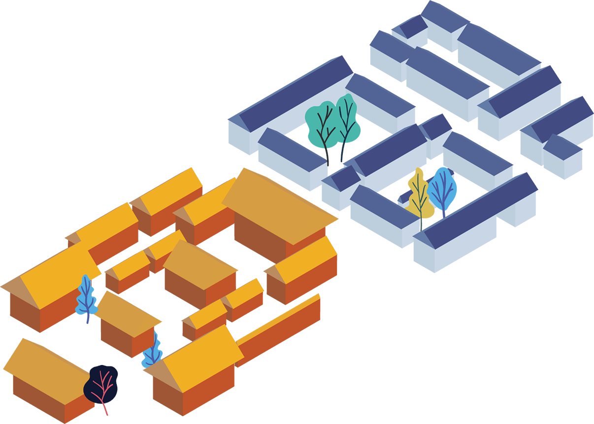
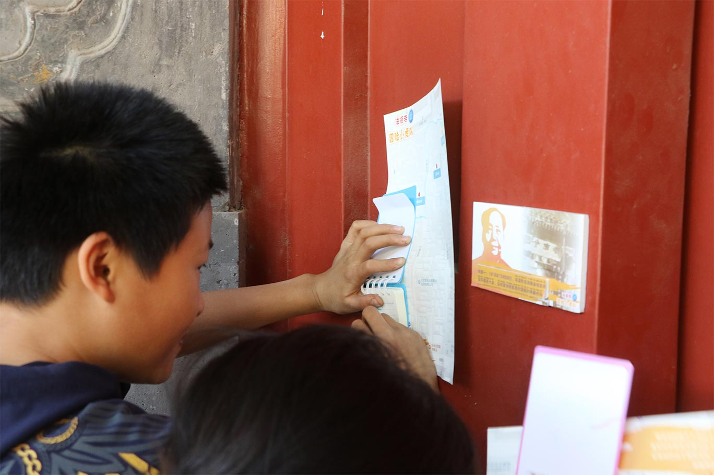
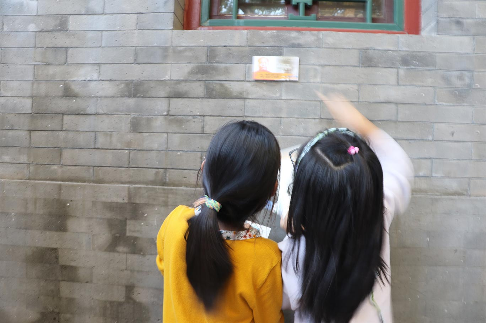
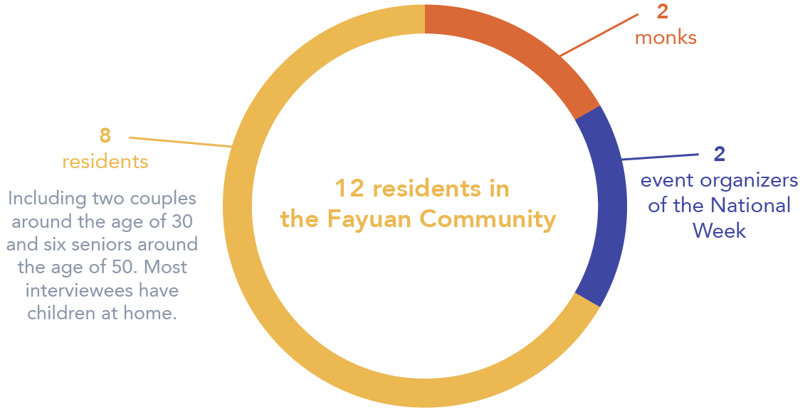
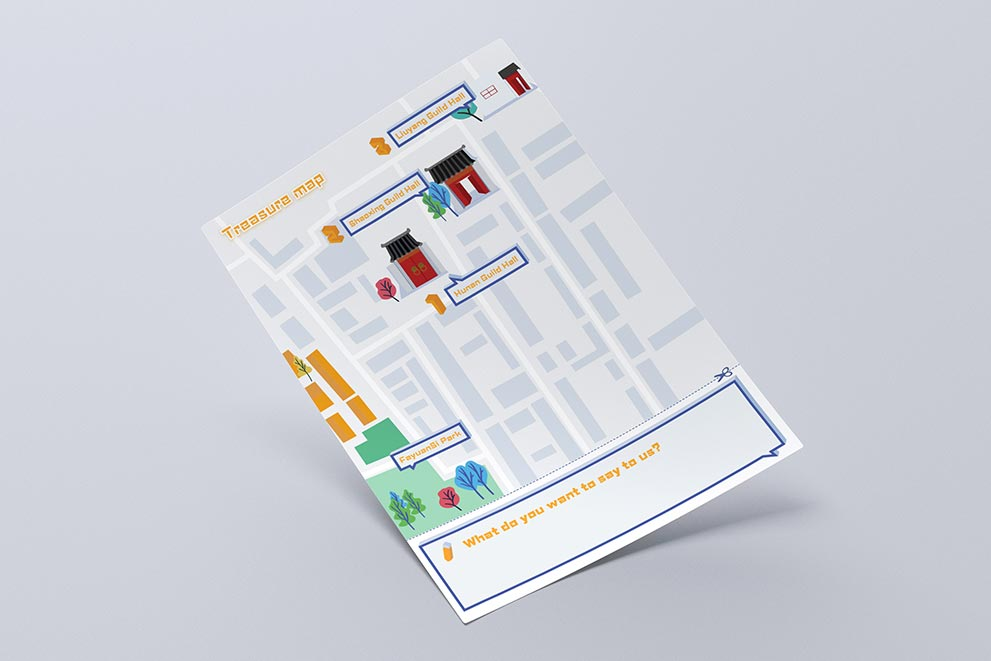
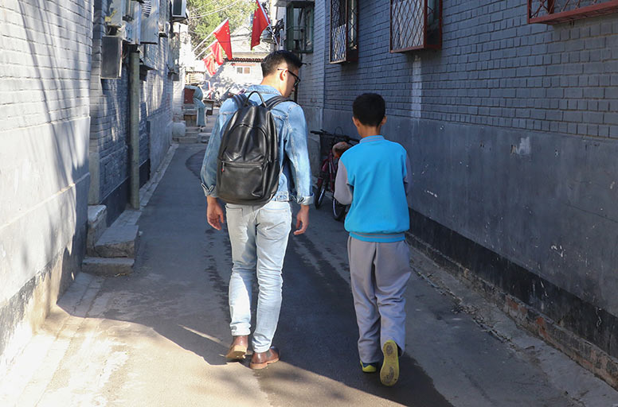
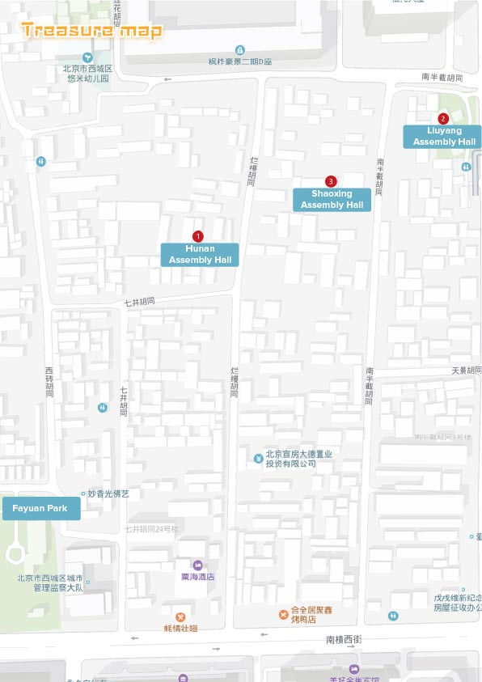
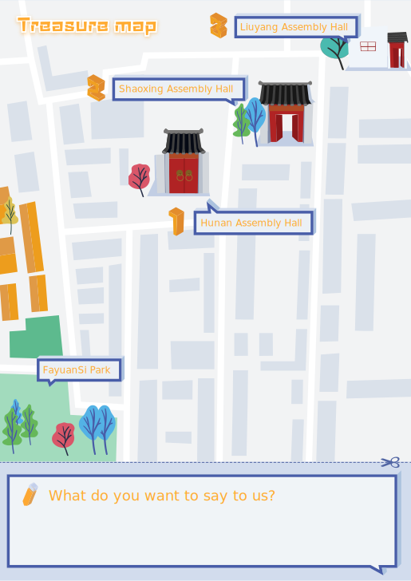

Gamified community event for children
Oct 2018 - Nov 2018
Academic Project | Fayuan Community, Beijing, China
Skills
Urban Interaction Design, Event Design, Interactive Technology
Role
concept designer, interaction designer, programmer, graphic designer
Fayuan Temple is a historical community in Xijiao Hutong in Beijing. What makes Fayuan Community is even more special is that there's a historical temple in the community. As the city has modernized rapidly, the Hutong community has turned into an over-crowded area. As such, residents could not fully appreciate and connect to the historical culture and buildings around them.
I want to explore a new way to improve the life of Hutong residents with participatory and urban interaction design, thus, revitalize the historical culture of the FayuanSi.
The “Treasure Hunters” is a gamified community event for children who lived at the Fayuan Community based on interactive installation.
By presenting the event as a treasure hunt and introducing components of gamification, I hope that children not only enjoy the event but also that it will encourage them to learn more about the history, culture, and stories of their community.
At the same time, by participating in the treasure hunt with their teammates, the children can strengthen their bonds of friendship with one another. As such, this event should not only be seen as entertainment, but also as a learning process.
I started by conducting field research at Fayuan Temple to understand how people live, work, and have fun.
Rich cultural heritage
The Fayuan Community is a historical community consisting of several Hutongs and assembly halls. The most representative assembly halls are Shaoxing Assembly Hall, Liuyang Assembly Hall, and Hunan Assembly Hall.
Many people visit Fayuan Temple on holidays and weekends to burn incense and worship the Buddha inside.
Over-crowded space and inconvenient transportation: in order to accommodate more residents, the original Siheyuans (traditional housing style in Beijing) have been reconstructed into a cramped courtyard with extremely narrow space in between that barely allows one person to pass through.
Lack of recreational public space.
Most visitors are around 30-50 years old.
Parents often bring their kids to play at the park. Seniors would walk around and play pokers.
I conducted deep user interviews with the residents in the Fayuan Community, in an effort to understand the way they perceive and participate in community activities and decide the event design direction.
I interviewed 12 residents in the Fayuan Community:
Some kids also accept interviews when I talk with their parents.
Middle aged residents:
Are the most open group of people.
Said there was an extremely popular community market organized in the park in front of the Fayuan Temple.
Visit the park in the morning or after 5 pm.
Are very willing to participate in activities.
Kids:
Were surprisingly open to the interview.
Lack space to play near their homes, so they often play at the park in front of Fayuan Temple.
Play at the park on weekends, since they go to school from Monday to Friday and usually stay at home after school.
Expressed interests in participating in interesting and fun activities.
Seniors:
Were the most cautious group of interviewees.
Mentioned that other organizations have hosted events about Buddhism before and felt that there was not much difference between each event.
Old Buddhists in the Temple:
Were very open to talking to us and mentioned they will “likely participate” in activities related to the Fayuan Temple.
Were very conservative about participating in community activities.
Mentioned they couldn’t make it to the activities because they have to take care of the little kids at home.
Monks
Mentioned Fayuan Temple often organizes its own events.
Did not show enthusiasm towards externally organized activities, as Fayuan Temple should be a tranquil and sacred religious land.
Need
The kids in the Fayuan Community needs outdoor activities to enrich their extracurricular life and their understanding of the community culture.
What surprised us
We initially thought that parents would hesitate to let their kids participate in our events. However, the kids and young parents showed tremendous enthusiasm and we predict high participation from this user group.
Place
The location for the event should be somewhere popular and characteristic. This will help us attract more event participants.
Jason Yang
10-year-old boy
Elementary school student in 4th grade.
Lives in Fayuan Community.
Likes playing badminton with friends in the park in front of Fayuan Temple on Sunday mornings.
Active participants in various extracurricular activities.
May Zhang
10-year-old boy
Despite her busy work schedule over 60 hours a week, she still manages to spend quality time with her son.
She participates in parental workshops with her son one or two times a week.
We want to design a game-based event for the kids in the Fayuan Community to have fun as well as learn about the cultural heritage in the Fayuan Temple.
We pick “treasure hunt” as the theme for the event and constraint the area of the event to the Fayuan Hutong, with the three Assembly Halls as the key locations for the treasure hunt. This way, we can naturally weave in the historical stories into the games and make sure the events are fun and interesting.
During the game, the kids need to partner up with other kids or their parents. They develop a deeper bond through this collaborative treasure hunting activity.
I divide the players into three teams and send them off to find hidden pieces in Fayuan Temple.
The players head to three key points: Shaoxing Assembly Hall, Liuyang Assembly Hall, and Hunan Assembly Hall. After they find the pieces hidden at the three locations, they will combine them into a complete key. The players can then use the key to open the treasure box.
The combined key can send a special pre-programmed blinking frequency to the box. The box will open after sensing the corresponding signal.
The key consists of three components, and the players will find three potential pieces for each component. Only one out of the three pieces are “real”. The player can only open the treasure box after combining the three “real” pieces.
Design shortfall:
If the three “real” pieces end up in three different teams, no team will be able to complete the “real” key and open the treasure box.
I used physical keys in the first interaction as the media to convey the message to open the treasure box. However, there were number constraints for physical keys due to our limited budget. The limited number of physical keys caused the teams to compete for the same keys, which was not what we intended. What if we could design a virtual key for the treasure box and bypass the resource constraints?
I got inspired by the safety verification puzzle we often see when logging in online:
picture source: JD.com
Assemble
When the game starts, the players assemble at the “base-camp” and receive the Puzzle Cards and Treasure Map.
Look for clues
Using the information from the map, the players go looking for three clues and assemble the Puzzle Cards and Clue cards to complete the puzzle and obtain the information they need to complete the game.
Open the treasure chest
From this point the players need to look for the Treasure Chest and open it using the information they obtained from the puzzle.The first players to open the chest then win the treasure.
Puzzle Card
This is the puzzle card that I distribute to players at the beginning of the game. Each puzzle card has one missing piece (the clue cards). The team needs to find the missing piece from the marked locations on the map in order to complete the puzzle and receive clues.
Clue card
Each Clue Card is attached to an Interactive Talking Box that matches with a Puzzle card. When users complete the puzzle with the correct missing piece, the Interactive Talking Box will play a recorded audible story that happened in the assembly hall. This function is powered by Arduino.
Treasure Map
Indicates the location of the Clue Cards and the Treasure Chest.
Treasure Chest
A chest protected with a password which is indicated in the audible story, that contains the treasure.

Event Canvas
Puzzle Card
Each Puzzle Card is attached with an NFC(Near Field Communication) chips.
Clue Card & Interactive Talking Box
The Clue Cards are attached on the Interactive Talking Box which is embedded with an NFC module and a speaker.
Sample audible story:
“Lu Xun wrote the first and most influential fiction in modern Chinese right here in Shaoxing Assembly Hall.”
“Sitong Tan lived in Liuyang Assembly Hall when he initiated the Hundred Days Reform.”
“On December 28 1919, Mao Zedong organized a gathering at the Hunan Assembly Hall to rebel against the cruel management of the school president Zhang Jingyao.”
Treasure Chest
Treasure Box questions:

Treasure Chest Questions:
Question 1：Who wrote A Madman’s Diary？
Question 2：Where did Tan Sitong live during the Hundred Days Reform in 1898?
Treasure Map
The invitation cards can be given to the parents at the event and the banner can be used simply to attract attention during the game! Not only do promotional materials serve as visual identifiers, but they can also help generate excitement for the event.
The promotional banner and the invitation card
I recruited other classmates at school as volunteers to our event. During the event, we have one volunteer waiting at the treasure box, with the other volunteers recording participants’ behaviors and emotional reactions during the game.
Inviting

We have handed out invitation cards for kids and parents who wish to join the game to form a team before the event.
Day One Debrief
Overall the participants had a fun time!
Although I tried to design a simple game, it still seemed a bit difficult for a ten-year-old to comprehend.
Need to simplify the game even more. For example, include more instructions on the map, put more apparent signs at the treasure spots.
Need to look for a suitable gift to be put in the treasure box for our young participants.
Kids who didn’t manage to open the final treasure felt left out.
I followed participants during the event, and recorded their emotion and reactions in different phases and according to which, I teased out several phases that needed improvements.
User emotional recreations were recorded during the event.
According to the analysis of participants' emotions and pains during the first event day, I did the following improvements on the second event day.
Learning by doing:
I decided to lead all the kids to the first clue and answer any questions they may have along the way.
Consolation Prize:
I prepared gifts for kids who couldn’t manage to open the treasure box.
Optimizing the map:
I redesigned the Treasure Map in an effort to make it more user-friendly by simplifying the map and visualizing the three clue spots
I also added a feedback section to our map, so that the kids can tell us their thoughts after the event.
Before:
After:
Rapid prototyping is a huge piece of keeping the momentum going. Due to the time constraints, it's important to push the team to test quickly and gather feedback. This allowed my team to take risks early on and have the confidence to try things out. This allowed us to go through several iterations and get more prepared before the event.
It’s important to partner with the leaders in the community. They helped me and my team gain trust with the community and quickly recruited participants.
Pro-actively ask for advice from event planning experts. They are often times very happy to help out.
The gifts for kids don’t have to be pricey but need to be fun, pretty, and unique.